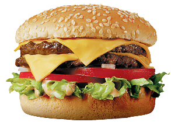

Cheesy burger taco

Description
A recipe to make a amazing variant of a burger, the cheesy burger taco.
The recipe consists of ground beef, taco seasoning, cheddar cheese and some patties.
Ingredients
- 1 ounce of ground beef
- 1 ounce of package taco seasoning
- 3 thick slices of Cheddar Cheese
- 3 hamburger buns, split
Steps
The steps required to make the cheesy taco burger.
- Mix ground beef and taco seasoning together in a bowl. Set it in the refrigerator for 30 minutes to let the taco mix infuse into the beef.
- Preheat an outdoor grill for medium heat and lightly oil the grate.
- Remove meat from the refrigerator and make 6 very thin patties. Place a slice of Cheddar cheese into the center of 3 patties. Place the remaining patties on top of the cheese patties and seal together by pinching the ends.
- Cook on the preheated grill for 6 to 7 minutes. Flip and continue cooking until it is no longer pink>, 6 to 7 minutes more. Place on hamburger buns.
That's it! If you followed the steps, You've made yourself a delicious cheesy taco burger. Enjoy the bites!